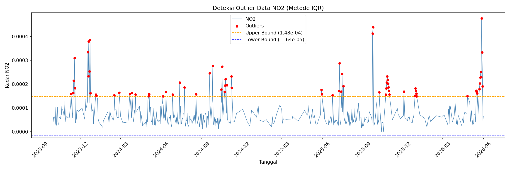
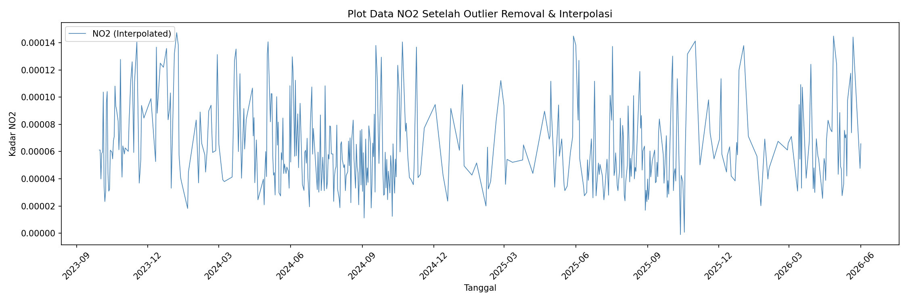
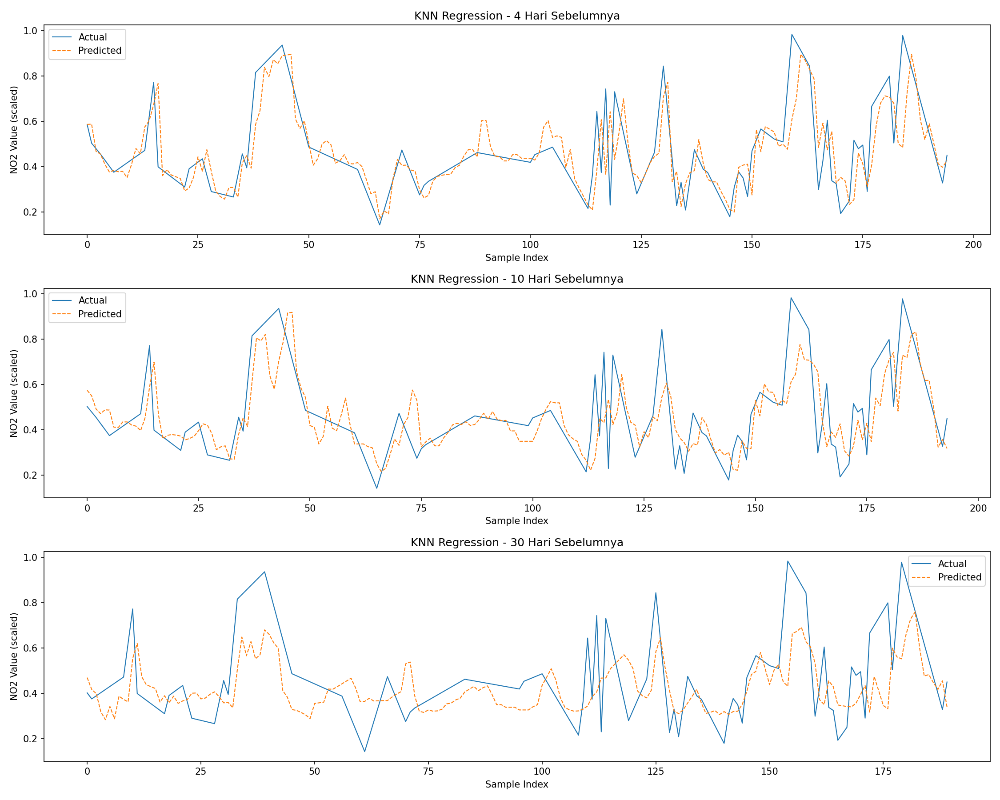

Peramalan Kadar \(NO_2\) di Daerah Gresik#
Latar Belakang#
Peningkatan aktivitas industri, transportasi, serta pertumbuhan populasi yang pesat telah menyebabkan peningkatan signifikan terhadap tingkat pencemaran udara di berbagai wilayah. Salah satu polutan udara utama yang menjadi perhatian adalah Nitrogen Dioksida (NO₂), yaitu gas beracun yang dihasilkan terutama dari proses pembakaran bahan bakar fosil seperti kendaraan bermotor, pembangkit listrik, dan kegiatan industri. NO₂ memiliki dampak serius terhadap kesehatan manusia, seperti gangguan pernapasan, iritasi paru-paru, serta memperburuk penyakit asma dan bronkitis. Selain itu, NO₂ juga berkontribusi terhadap pembentukan hujan asam dan penurunan kualitas lingkungan secara keseluruhan.
1. Pengumpulan Data#
Pertama kita akan mengumpulkan data Time Series Harian kadar NO2 di daerah Bangkalan. Pengumpulan data dari sumber website https://dataspace.copernicus.eu/ , buat akun terlebih dahulu di website copernicus tersebut.
Dokumentasi cara pengambilan data di https://documentation.dataspace.copernicus.eu/notebook-samples/openeo/NO2Covid.html .
Untuk menuliskan code Python untuk mengambil data, silahkan kunjungi halaman https://dataspace.copernicus.eu/analyse/jupyterlab, klik Access JupyterLab, scroll kebawah sedikit …, lalu pilih Python 3 (ipykernel).
Disini kita akan mengambil data kadar NO2 di daerah Bangkalan dari tanggal 2023-10-01 sampai 2026-06-02.
Kita install terlebih dahulu openeo:
pip install openeo
Lalu tuliskan code berikut:
import openeo
connection = openeo.connect("openeo.dataspace.copernicus.eu").authenticate_oidc()
Pada saat menjalankan baris code diatas (connection), nanti akan diminta authentikasi seperti output berikut:
Visit (link authentikasi) 📋 to authenticate.
✅ Authorized successfully
Authenticated using device code flow.
Kalian tinggal klik link authentikasi lalu login menggunakan akun “copernicus” kalian.
Berikut adalah code untuk menentukan area of interest (AOI) dan mengambil data NO₂ dari Sentinel-5P:
aoi = {
"type": "Feature",
"properties": {},
"geometry": {
"type": "Polygon",
"coordinates": [
[
[112.6443184, -7.1454955],
[112.6571258, -7.1450848],
[112.6744388, -7.1694293],
[112.6589973, -7.1910203],
[112.6282277, -7.1862378],
[112.6321513, -7.1504892],
[112.6443184, -7.1454955]
]
]
}
}
s5post = connection.load_collection(
"SENTINEL_5P_L2",
temporal_extent=["2023-10-01", "2026-06-02"],
spatial_extent={
"west": 112.68,
"south": -7.20,
"east": 113.09,
"north": -6.89
},
bands=["NO2"],
)
# Now aggregate by day to avoid having multiple data per day
s5p_no2_daily = s5post.aggregate_temporal_period(reducer="mean", period="day")
# Now create a spatial aggregation to generate mean timeseries data
s5p_no2_aoi = s5p_no2_daily.aggregate_spatial(reducer="mean", geometries=aoi)
Code diatas memerlukan titik koordinasi area yang akan diambil data \(NO_2\)-nya. Untuk mengambil titik koordinasi, kunjungi website https://geojson.io/ . Di dalam website tersebut kalian akan memilih daerah dengan cara memberi shape polygon di daerah yang ingin kalian ambil datanya. Di panel sebelah kanan terdapat data JSON yang berupa koordinat daerah yang kalian pilih. Salin lalu sesuaikan dengan code diatas di bagian variabel aoi dan spatial_extent.
Lalu tambahkan baris code di bawah untuk memulai pengambilan data. Kali ini kita langsung export sebagai CSV menggunakan parameter out_format="CSV":
job = s5p_no2_aoi.execute_batch(title="NO2 in Gresik", outputfile="NO2Gresik.csv", out_format="CSV")
Tunggu proses pengambilan data. Output proses seperti berikut:
0:00:00 Job 'j-2510231608434524a87dedeacfaf5a43': send 'start'
0:00:15 Job 'j-2510231608434524a87dedeacfaf5a43': created (progress 0%)
0:00:35 Job 'j-2510231608434524a87dedeacfaf5a43': queued (progress 0%)
0:01:33 Job 'j-2510231608434524a87dedeacfaf5a43': running (progress N/A)
0:07:50 Job 'j-2510231608434524a87dedeacfaf5a43': finished (progress 100%)
Catatan: Abaikan ketika ada
N/Apada progress.
Ketika proses pengambilan data, aktivitas kalian akan terekam di halaman https://editor.openeo.org/ . Di situ terdapat nama dataset dan status pengambilan data.
2. Preprocessing Data#
Karena data sudah berbentuk CSV, kita tidak lagi memerlukan parsing file .nc. Data CSV hasil export memiliki tiga kolom: date, feature_index, dan NO2.
import pandas as pd
df = pd.read_csv("NO2Gresik.csv")
print(df.head())
print(df.dtypes)
date feature_index NO2
0 2024-12-06T00:00:00.000Z 0 NaN
1 2024-12-05T00:00:00.000Z 0 NaN
2 2024-11-29T00:00:00.000Z 0 0.000095
3 2024-12-04T00:00:00.000Z 0 NaN
4 2024-11-30T00:00:00.000Z 0 NaN
Kita hanya memerlukan kolom date dan NO2. Kolom feature_index tidak diperlukan sehingga bisa diabaikan.
a. Parsing Tanggal dan Reindex Harian#
Langkah pertama adalah mengubah format datetime, mengurutkan data, lalu melakukan reindex agar setiap hari memiliki satu baris (mengisi tanggal yang hilang dengan NaN):
import pandas as pd
import numpy as np
df = pd.read_csv("NO2Gresik.csv")
# Parse datetime dan urutkan
df['date'] = pd.to_datetime(df['date'])
df = df.sort_values('date').reset_index(drop=True)
# Reindex ke rentang harian penuh
full_range = pd.date_range(start=df['date'].min(), end=df['date'].max(), freq='D')
df = df.set_index('date')[['NO2']].reindex(full_range)
df.index.name = 'date'
print(f"Total baris setelah reindex: {len(df)}")
print(f"Jumlah NaN: {df['NO2'].isna().sum()}")
Total baris setelah reindex: 976
Jumlah NaN: 493
b. Mengatasi Missing Value menggunakan Metode Interpolasi Linear#
# Interpolasi linear berdasarkan indeks waktu
df['NO2'] = df['NO2'].interpolate(method='time')
# Jika masih ada NaN di bagian awal/akhir
df['NO2'] = df['NO2'].bfill().ffill()
print(f"Jumlah NaN setelah interpolasi: {df['NO2'].isna().sum()}")
Jumlah NaN setelah interpolasi: 0
c. Deteksi Outlier IQR#
Setelah mengisi missing value, kita akan mendeteksi outlier menggunakan metode IQR:
import matplotlib.pyplot as plt
# Hitung IQR
Q1 = df['NO2'].quantile(0.25)
Q3 = df['NO2'].quantile(0.75)
IQR = Q3 - Q1
lower_bound = Q1 - 1.5 * IQR
upper_bound = Q3 + 1.5 * IQR
# Filter outlier
outliers_iqr = df[(df['NO2'] < lower_bound) | (df['NO2'] > upper_bound)]
print(f"Q1: {Q1:.2e} | Q3: {Q3:.2e} | IQR: {IQR:.2e}")
print(f"Lower Bound: {lower_bound:.2e} | Upper Bound: {upper_bound:.2e}")
print(f"Jumlah Outlier (IQR): {len(outliers_iqr)}")
Q1: 4.54e-05 | Q3: 8.65e-05 | IQR: 4.11e-05
Lower Bound: -1.64e-05 | Upper Bound: 1.48e-04
Jumlah Outlier (IQR): 74
Visualisasi deteksi outlier:
fig, ax = plt.subplots(figsize=(15, 5))
ax.plot(df.index, df['NO2'], label='NO2', linewidth=0.8, color='steelblue')
ax.scatter(outliers_iqr.index, outliers_iqr['NO2'],
color='red', s=18, zorder=5, label='Outliers')
ax.axhline(upper_bound, color='orange', linestyle='--', linewidth=1,
label=f'Upper Bound ({upper_bound:.2e})')
ax.axhline(lower_bound, color='blue', linestyle='--', linewidth=1,
label=f'Lower Bound ({lower_bound:.2e})')
ax.set_title('Deteksi Outlier Data NO2 (Metode IQR)')
ax.set_xlabel('Tanggal')
ax.set_ylabel('Kadar NO2')
ax.legend()
ax.xaxis.set_major_locator(plt.matplotlib.dates.MonthLocator(interval=3))
ax.xaxis.set_major_formatter(plt.matplotlib.dates.DateFormatter('%Y-%m'))
plt.xticks(rotation=45)
plt.tight_layout()
plt.show()

Terdapat 74 outlier yang terdeteksi, umumnya terjadi pada bulan-bulan tertentu dengan kadar NO₂ yang sangat tinggi akibat aktivitas industri atau kondisi atmosfer tertentu.
d. Hapus Outlier dan Interpolasi Ulang#
Data outlier ditandai sebagai NaN lalu diisi kembali menggunakan Interpolasi Linear:
# Tandai outlier menjadi NaN
df['NO2_cleaned'] = df['NO2'].mask(
(df['NO2'] < lower_bound) | (df['NO2'] > upper_bound)
)
print(f"Jumlah outlier yang dihapus: {df['NO2_cleaned'].isna().sum()}")
# Interpolasi linear untuk mengisi kembali nilai outlier
df['NO2_filled'] = df['NO2_cleaned'].interpolate(method='linear')
df['NO2_filled'] = df['NO2_filled'].bfill().ffill()
print(f"Jumlah missing setelah interpolasi: {df['NO2_filled'].isna().sum()}")
Visualisasi data setelah outlier removal:
fig, ax = plt.subplots(figsize=(15, 5))
ax.plot(df.index, df['NO2_filled'], linewidth=0.8,
color='steelblue', label='NO2 (Interpolated)')
ax.set_title('Plot Data NO2 Setelah Outlier Removal & Interpolasi')
ax.set_xlabel('Tanggal')
ax.set_ylabel('Kadar NO2')
ax.legend()
ax.xaxis.set_major_locator(plt.matplotlib.dates.MonthLocator(interval=3))
ax.xaxis.set_major_formatter(plt.matplotlib.dates.DateFormatter('%Y-%m'))
plt.xticks(rotation=45)
plt.tight_layout()
plt.show()

e. Simpan ke CSV#
df[['NO2_filled']].rename(columns={'NO2_filled': 'NO2'}).to_csv(
"no2_timeseries_interpolated.csv"
)
3. Modeling menggunakan KNN Regression#
Dengan data Time Series kadar NO2 harian yang sudah bersih, kita akan memprediksi kadar NO2 satu hari yang akan datang.
a. Uji Korelasi Data#
Sebelum masuk ke modeling, data kita ubah menjadi supervised lalu uji korelasi terhadap label (t). Fitur-fiturnya merupakan 30 hari sebelum (t-30, t-29, … t-1) dan label (t).
import pandas as pd
def create_supervised(data, n_lag=4):
df_supervised = pd.DataFrame()
for i in range(n_lag, 0, -1):
df_supervised[f'NO2(t-{i})'] = data.shift(i)
df_supervised['NO2(t)'] = data
df_supervised.dropna(inplace=True)
return df_supervised
supervised_df30 = create_supervised(df['NO2_scaled'], n_lag=30)
lag_cols = supervised_df30.drop(columns="NO2(t)").columns
correlations = supervised_df30[lag_cols].corrwith(supervised_df30['NO2(t)'])
print(correlations)
Berdasarkan hasil uji korelasi, fitur dengan nilai di atas 0.5 adalah t-1 sampai t-4.
b. Normalisasi Data#
Karena kita menggunakan model KNN Regression, perlu normalisasi data menggunakan MinMaxScaler:
from sklearn.preprocessing import MinMaxScaler
scaler = MinMaxScaler()
df['NO2_scaled'] = scaler.fit_transform(df[['NO2_filled']])
c. Mengubah Data ke Format Supervised#
supervised_df = create_supervised(df['NO2_scaled'], n_lag=4) # (972, 5)
supervised_df10 = create_supervised(df['NO2_scaled'], n_lag=10) # (966, 11)
supervised_df30 = create_supervised(df['NO2_scaled'], n_lag=30) # (946, 31)
d. Modeling dan Evaluasi#
from sklearn.neighbors import KNeighborsRegressor
from sklearn.model_selection import train_test_split
from sklearn.metrics import mean_squared_error, r2_score
import numpy as np
def MAPE(y_true, y_pred):
y_true, y_pred = np.array(y_true), np.array(y_pred)
nonzero = y_true != 0
return np.mean(np.abs((y_true[nonzero] - y_pred[nonzero]) / y_true[nonzero])) * 100
def train_knn(df_supervised, model_name=""):
X = df_supervised.drop(columns=['NO2(t)']).values
y = df_supervised['NO2(t)'].values
X_train, X_test, y_train, y_test = train_test_split(
X, y, test_size=0.2, shuffle=False
)
knn = KNeighborsRegressor(n_neighbors=5)
knn.fit(X_train, y_train)
y_pred = knn.predict(X_test)
rmse = np.sqrt(mean_squared_error(y_test, y_pred))
r2 = r2_score(y_test, y_pred)
mape = MAPE(y_test, y_pred)
print(f"\n=== {model_name} ===")
print(f"Train Size: {len(X_train)} — Test Size: {len(X_test)}")
print(f"RMSE : {rmse:.6f}")
print(f"R² : {r2:.4f}")
print(f"MAPE : {mape:.4f}%")
return knn, y_test, y_pred
knn_4, y_test_4, y_pred_4 = train_knn(supervised_df, "KNN - 4 Hari Sebelumnya")
knn_10, y_test_10, y_pred_10 = train_knn(supervised_df10, "KNN - 10 Hari Sebelumnya")
knn_30, y_test_30, y_pred_30 = train_knn(supervised_df30, "KNN - 30 Hari Sebelumnya")
Hasil evaluasi dari data NO₂ Gresik:
=== KNN - 4 Hari Sebelumnya ===
Train Size: 777 — Test Size: 195
RMSE : 0.112308
R² : 0.6257
MAPE : 16.3065%
=== KNN - 10 Hari Sebelumnya ===
Train Size: 772 — Test Size: 194
RMSE : 0.124178
R² : 0.5438
MAPE : 20.1606%
=== KNN - 30 Hari Sebelumnya ===
Train Size: 756 — Test Size: 190
RMSE : 0.154589
R² : 0.3073
MAPE : 26.6399%
Model |
Train Size |
Test Size |
RMSE |
R² Score |
MAPE |
|---|---|---|---|---|---|
KNN - 4 Hari Sebelumnya |
777 |
195 |
0.112308 |
0.6257 |
16.31% |
KNN - 10 Hari Sebelumnya |
772 |
194 |
0.124178 |
0.5438 |
20.16% |
KNN - 30 Hari Sebelumnya |
756 |
190 |
0.154589 |
0.3073 |
26.64% |
e. Plotting#
import matplotlib.pyplot as plt
import numpy as np
fig, axes = plt.subplots(3, 1, figsize=(15, 12))
for ax, y_test, y_pred, title in zip(
axes,
[y_test_4, y_test_10, y_test_30],
[y_pred_4, y_pred_10, y_pred_30],
["KNN Regression - 4 Hari Sebelumnya",
"KNN Regression - 10 Hari Sebelumnya",
"KNN Regression - 30 Hari Sebelumnya"]
):
ax.plot(np.arange(len(y_test)), y_test, label='Actual', linewidth=1)
ax.plot(np.arange(len(y_pred)), y_pred, label='Predicted',
linewidth=1, linestyle='--')
ax.set_title(title)
ax.set_xlabel('Sample Index')
ax.set_ylabel('NO2 Value (scaled)')
ax.legend()
plt.tight_layout()
plt.show()

Kesimpulan#
Hasil evaluasi model KNN Regression pada data NO₂ Gresik menunjukkan bahwa model dengan 4 hari sebelumnya memberikan performa terbaik dengan RMSE terkecil (0.112), R² tertinggi (0.626), dan MAPE terendah (16.3%). Ini mengindikasikan model mampu menjelaskan sekitar 62% variabilitas data target — jauh lebih baik dibandingkan percobaan sebelumnya.
Ketika jumlah lag ditambah menjadi 10 dan 30 hari sebelumnya, performa model menurun secara konsisten — RMSE dan MAPE meningkat, sedangkan R² menurun. Hal ini mengonfirmasi bahwa penambahan fitur historis yang berlebihan menyebabkan dimensionalitas tinggi (curse of dimensionality) yang justru merugikan KNN.
Secara keseluruhan, model KNN dengan lag 4 sudah cukup baik untuk data ini, namun eksplorasi model lain seperti LSTM atau SARIMA tetap direkomendasikan untuk hasil prediksi yang lebih optimal.